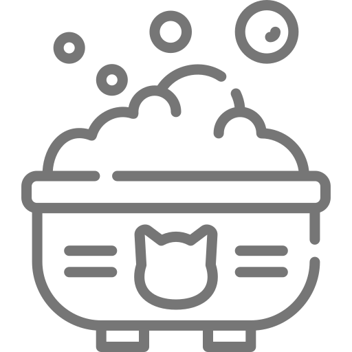
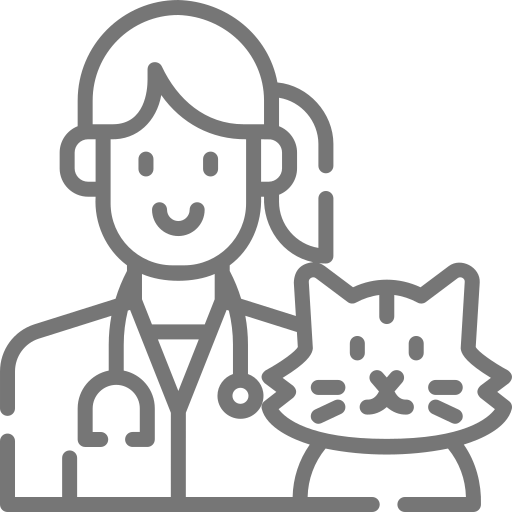
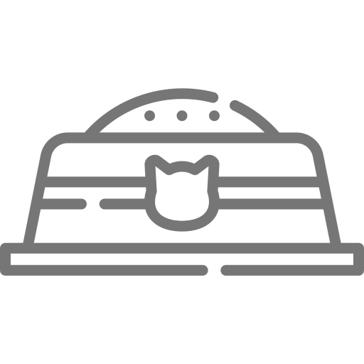
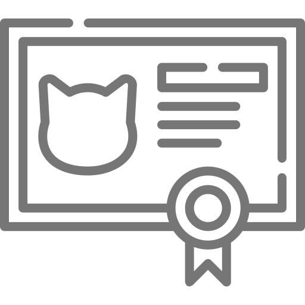

Nuestras principales actividades

Rescate y refugio
Rescatamos a los gatos en situaciones de riesgo y les proporcionamos un refugio seguro temporal.

Atención médica
Brindamos tratamientos veterinarios y vacunaciones necesarias para gatos enfermos o heridos.

Alimentación y cuidado
Proporcionamos alimentación regular y mejoramos el entorno de los gatos callejeros.

Educación y concienciación
Realizamos campañas y actividades educativas para fomentar una cultura de tenencia responsable.